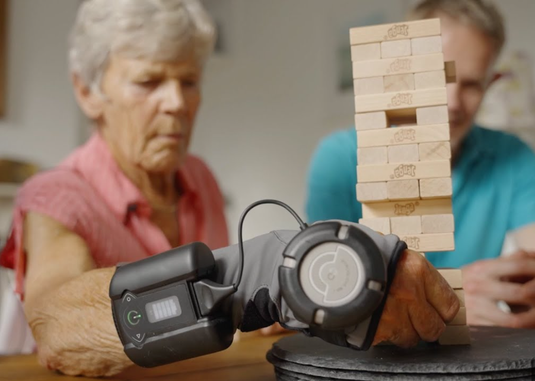

Estabilización de movimientos
Utiliza la tecnología giroscópica para estabilizar los temblores de las manos y así poder tener un mayor destreza y control en su rutina diaria.
El GyroGlove es un dispositivo que ayuda a personas con párkinson, condición que tienen algunas personas con edad adulta, por lo tanto, este dispositivo iría orientado a estas personas o principios del mismo.
Este producto ha sido lanzado en este 2024, es un guante que utiliza una tecnología giroscópica para estabilizar los movimientos de la mano, pudiendo así controlar sus acciones diarias con mayor precisión. Gracias al diseño que se ofrece las personas podrán realizar sus actividades cotidianas.
Este dispositivo no solo presenta un avance tecnológico sino también representa un impacto positivo con respecto a los tratamientos principales.
Utiliza la tecnología giroscópica para estabilizar los temblores de las manos y así poder tener un mayor destreza y control en su rutina diaria.
Gracias a que evita los temblores hace que nuestros usuarios tengan mayor independencia y por lo tanto mejore su nivel de vida, ya que reduce la frustración, y mejora notablemente el bienestar emocional.
A diferencia de otros tratamientos tradicionales como son los medicamentos, nuestro producto ofrece un alivio instantáneo sin complicaciones futuras y con una solución rápida.
GyroGlove permite que las personas estén conectadas a su día a día gracias a q van a poder utilizar de forma efectiva las pantallas táctiles y los teclados.
Este dispositivo se ajusta a las preferencias del usuario y sus niveles de temblores, lo que asegura que cada usuario obtenga el mayor rendimiento del producto según sus necesidades individuales.
Tiene un impacto muy positivo ya que ayuda a nuestros usuarios a interactuar de forma normal con su entorno y disfrutar de las actividades que realizan cada día. Esa sensación que aporta nuestro producto ayuda a reducir la ansiedad y depresión que están asociadas con ciertas limitaciones físicas.
El avance significativo de la tecnología ayuda a personas con temblores ayudando a mitigar los efectos de la enfermedad antes de la llegada de El Gyro Globe las personas dependían de acciones más intrusivas para luchar contra sus limitaciones que dependían principalmente de una combinación farmacológicos, mecánicos y terapéuticos.También las intervenciones quirúrgicas eficaces para algunos pacientes, implican riesgos significativos y obviamente una recuperación muy prolongada.
En definitiva, este producto no solo ha sustituido tratamientos anteriores si no que ha mejorado de una forma radical la vida de las personas y como interactúan con su entorno. Gracias a su capacidad de estabilización dinámica, su facilidad de uso y su diseño portable, lo convierte en una de las herramientas que muchas personas buscan para mejorar su calidad de vida.
El párkinson es una enfermedad progresiva y neurodegenerativa que afecta principalmente al sistema nervioso central lo que caracteriza por una disminución y degeneración de las neuronas productoras de dopamina, llamada sustancia negra. La dopamina es el neurotransmisor esencial para el control del movimiento, su deficiencia conduce a los síntomas típicos de esta enfermedad.
La enfermedad del párkinson puede variar tanto en su grado como en su desarrollo de una persona a otra. Pero aquí recopilamos uno de los síntomas mas comunes que incluyen:
temblores
Rigidez muscular
Bradicinesia (lentitud en los movimientos voluntarios)
Inestabilidad postural
Cambios en la escritura
Síntomas no motores, como pueden ser depresión, ansiedad, fática, trastornos del sueño y problemas cognitivos